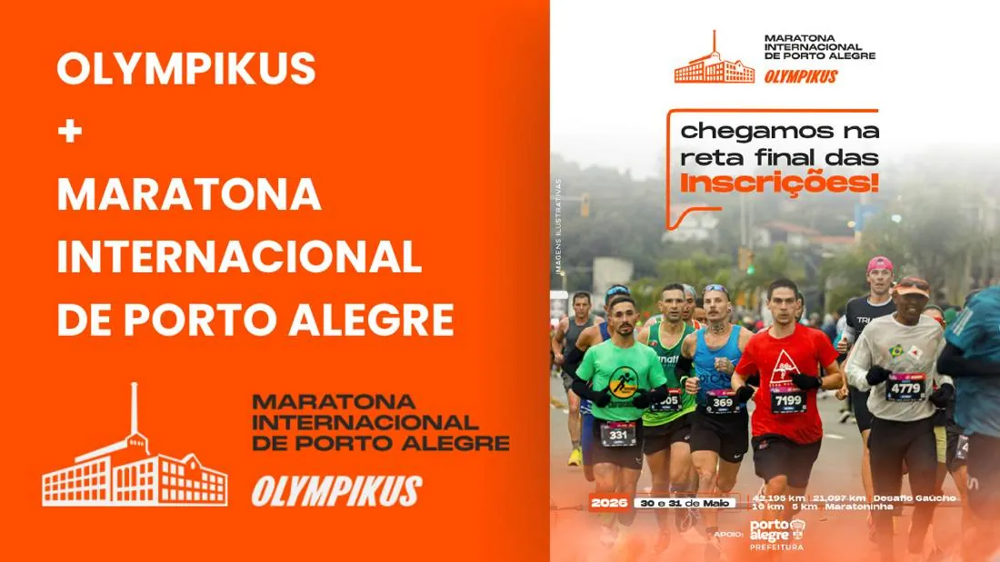
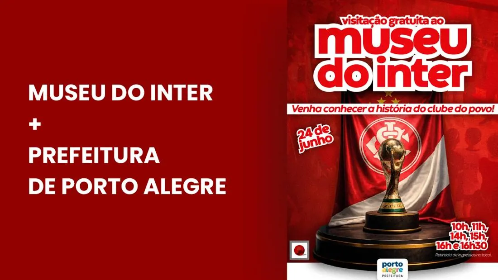
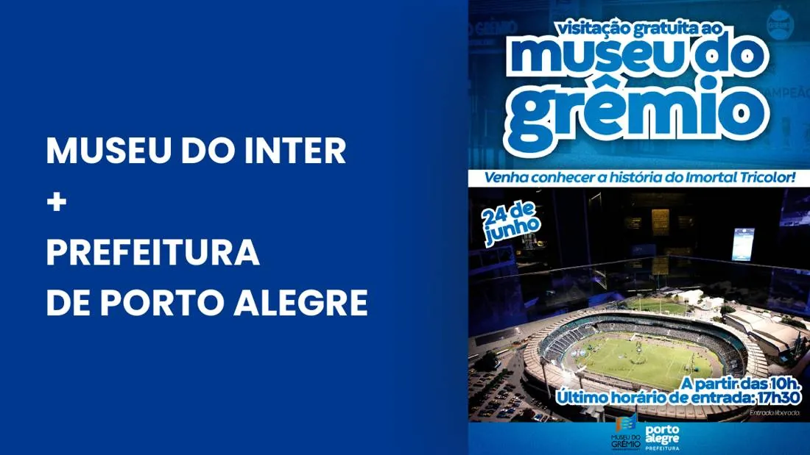

Olympikus + Maratona Internacional de Porto Alegre e os museus do Inter e do Grêmio, com a Prefeitura.

Peças da última chamada da Maratona Internacional de Porto Alegre, em parceria com a Olympikus: urgência sem perder a marca.
Divulgação dos museus dos dois clubes com a Prefeitura. O desafio: dar a cada um a própria personalidade sem quebrar a linguagem da campanha.


Antônio Meneghetti, designer e diretor de arte em Porto Alegre.
Portfólio completo e contato no meu perfil.